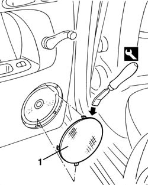
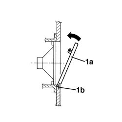

7010E22 grille for radio system on rear door panel (one) lh or rh - r r
- Path
- Procedures > 70 FITTINGS > 7010 PASSENGER COMPARTMENT REAR SIDE DOORS > 7010E rear side door trim > 7010E22 grille for radio system on rear door panel (one) lh or rh - r r
- Kind
- repair procedure (removal / refitting; the operation number is the code)
- Applies to
- all engines; all production periods
- Interactive page
- https://sloeber94.github.io/elrnDB-a156/en/#/3238679
Applies to: all engines; all production periods
 Removing
Removing
 Refitting
Refitting1. Remove the speaker grille with the tool. Insert the tool in the upper area, as shown in the picture.
 | Name | Country |
|---|---|---|
1 | Scraper blade | 1.823.014.000 |

Applies to: all engines; all production periods
Refitting
RemovingCheck that the speaker grille is not damaged and that the anchor stops are intacts.
1. Insert the speaker grille (1a). Insert the lower stop (1b) in its seat, then fasten the grille with the other stops.

Topics that link to this page (28)
- 5505B21 rear door wiring - r r
- 5570T96 rear side speaker - r r
- 5580T20 bose sound system rear speaker (one), lh or rh - r r
- 7010A05 rear side door water guard protection-r r or arrange
- 7010A28 rear side door opening limiter-r r
- 7010C11 rear side door outside handle-r r
- 7010C51 rear side door inner catch return device - r+r for repair or replacement
- 7010C55 rear side door interior opening return device (with handle) - r+r for repair or replacement
- 7010C65 handle link to lock - r r
- 7010C67 rear side door safety catch link-r r
- 7010C69 rear door catch return - r r
- 7010C71 link with knob for rear side door safety catch - r+r
- 7010D12 fixed window glass element - r r
- 7010D15 rear side door descending window glass-r r
- 7010D18 rear side door descending window glass channel r r
- 7010D23 rear side door descending window glass guide one-r r
- 7010D26 rear side descending window glass scraper (outer) r r
- 7010D30 rear side descending window glass scraper (inner) r r
- 7010D35 rear side door manual window glass-r r
- 7010D37 rear side door window mechanism-check position and fastening
- 7010DE39 rear door reinforcement bracket - r r
- 7010E10 rear side door inner panel - r r or replace
- 7010E50 rear side door pillar trim (one) lh or rh - r r
- 7010E94 frame reinforcement bracket on one rear door one lh or rh r r
- 7010M21 rear side door electrically-operated window-r r
- 7010M25 lh rear side doorelectrically-operated window mechanism-check position and fastening
- 7010N21 rear side door lock motor-lock assembly r r
- 7205E38 Stripping REAR SIDE DOOR